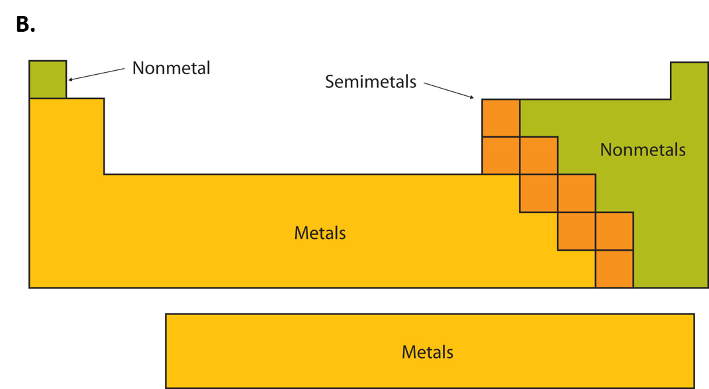
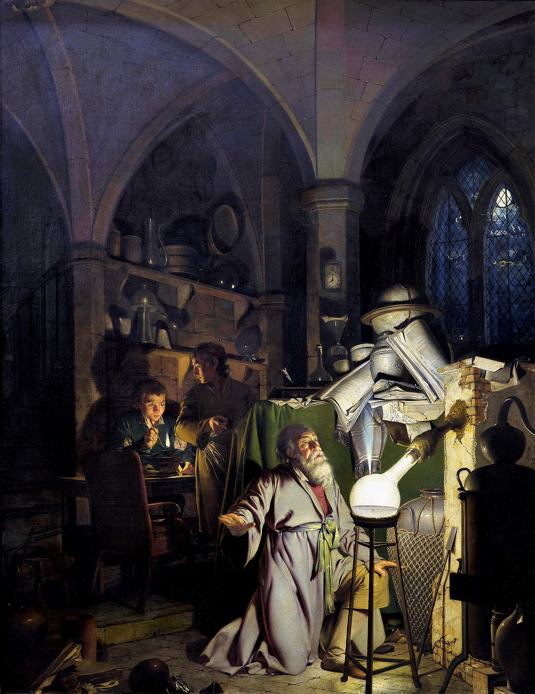

Elements
Core Concepts
- Many elements are already familiar.
- Each element is made of a single type of atom.
- Some elements do not occur in nature.
- Some elements are more abundant than others.
- Some elements are more useful to us than others.
- Elements with lower atomic number are less dense.
Elements to Know
See if you know these terms, then click on the buttons to reveal the definitions.Hydrogen has one proton in its nucleus and no neutrons. It is the lightest and most abundance element in the universe.
- Oxygen has 8 protons in its nucleus.
- It is the most common element in the Earth's crust.
- Fire is caused by the rapid combination of oxygen with other atoms.
- We need oxygen to live because we get energy from food by slowly combining oxygen with other atoms.
- Carbon has 6 protons in its nucleus.
- Carbon is so important that the study of chemistry is divided into two branches: one involving carbon (organic chemistry) and one without carbon (inorganic chemistry).
- Of the known compounds, there are about 10 million organic compounds (which contain carbon), but only about 100,000 inorganic compounds (which don't contain carbon).
- Diamond is made of pure carbon.
- Nitrogen has 7 protons in its nucleus.
- Nitrogen forms the most common gas in our atmosphere, making up about 79%.
- Nitrogen is the most important component of fertilizer.
- Sodium has 11 protons in its nucleus.
- Its chemical symbol is Na. This is based on its Latin name "natrium".
- It is one of the two elements in salt, and is therefore an important component of sea water.
- It is also an important component of your blood which helps cells function properly.
- Potassium has 19 protons in its nucleus.
- Its chemical symbol is K, which is based on its Latin name "kalium".
- It is an important component in your body which helps cells function properly.
- Silicon is a major component of a compound called silica, whcih is what quartz and sand is made of, and therefore, silicon is a major component of the Earth's crust.
- Silicon is used to make microchips.
- Aluminum is the lightest metal that can be used to make things. (Lighter metals, like lithium and sodium, are too reactive.
- Although aluminum is very common in the Earth's crust, it was originally very difficult to purify and was more expensive than gold. Because of its expense, the top of the Washington monument is made of pure aluminum.
- Now aluminum is very cheap and used for aluminum cans, and not for jewelry.
- Chlorine has 17 protons in its nucleus.
- It is one of the most reactive elements.
- It is the other component of salt (along with sodium), making it an important component of sea water.
- Calcium has 20 protons in its nucleus.
- It is a major component of many rocks.
- It is also a major component (along with phosphorus) of your bones.
- Phosphorus was the first element discovered that we know the story about its discovery.
- Phosphorus glows in the dark, which is why its name means "bringer of light".
- It is a major component of bone (along with calcium).
- Copper's chemical symbol is Cu, which is based on its Latin name.
- Copper was one of the first metals discovered and used.
- Wires are made of copper because it is a great conductor of electricity.
- It is one of the few colored metals.
- Its chemical symbol is Au, which is based on its Latin name "aurora".
- It is a precious metal, and is an expensive element, but certainly not the most expensive by far.
- Along with copper, it is one of the few colored metals.
- It does not easily combine with other elements and so gold jewelry keeps its luster even after thousands of years.
- Silver's chemical symbol is Ag, which is based on its Latin name.
- Silver is well-known for its antibacterial properties.
Other Concepts We Didn't Talk About
Quiz
Handouts
Websites
Topic-specific websites
The Elements by Theodore GrayWikipedia Articles
Composition of the Human BodyAbundance of Elements in the Earth's Crust
Timeline of Chemical Element Discoveries
Videos
Pictures
Elemental Composition of the Human Body

Here is an illustration of the major elements of the human body.
Important Elements in the Humna Body Shown on the Periodic Table

This periodic table is displays the most important elements in the human body highlighted in green. Insignificant elements are in brown.
This gives you an idea of the main elements to focus on for future studies in biology
Elemental Composition of the Earth's Crust

This is a list of the main elements in the Earth's crust. The two most common elements, oxygen and silicon, are the elements found in sand and many
other rocks.
The Major Groups of Elements

The elements are divided into groups based on their properties. Metals, for instance, are shiny and malleable (meaning they can be beat into shape with
a hammer. Non-metals, on the other hand, are dull and brittle (meaning they shatter when struck with a hammer).
The Alchemist

This is a famous painting by Joseph Wright of Derby, who is known for his paintings of scientific advances and his use of light. This painting depicts the
discovery of phosphorus, which was the first element discovered by a known person at a known time. Although the painting is fanciful, it is meant to
reveal the wonder of the German alchemist, Hennig Brand, who was trying to create gold from urine and, instead, separated out phosphorus. Although
Joseph Wright has exaggerated the effect, phosphorus does glow in the dark, which is why it was given a name which means "bringer of light".
Timeline of the Discovery of the Elements

This graph shows the number of elements that have been discovered over time. The rate of discovery has been pretty consistent, although it is expected
that we are near the end of that process, since the elements that have been discovered recently have actually been created. They are very unstable and short-lived, and it becomes
increasingly difficult to create new elements.